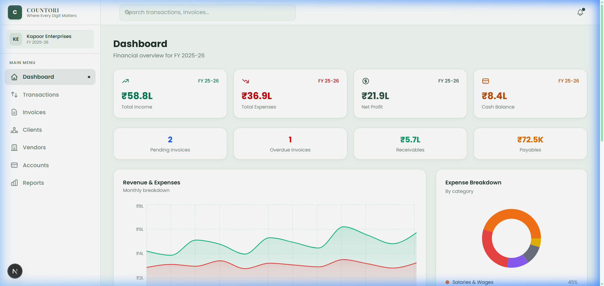
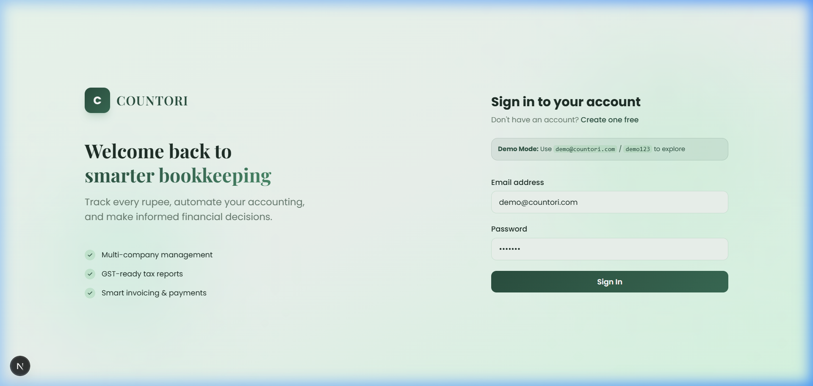
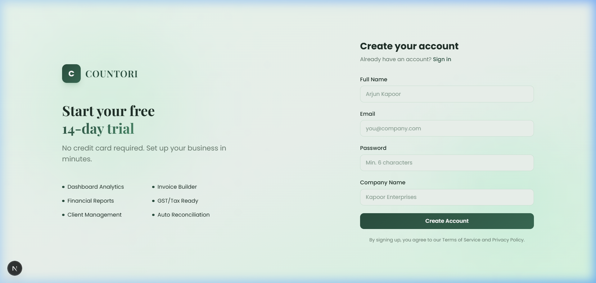
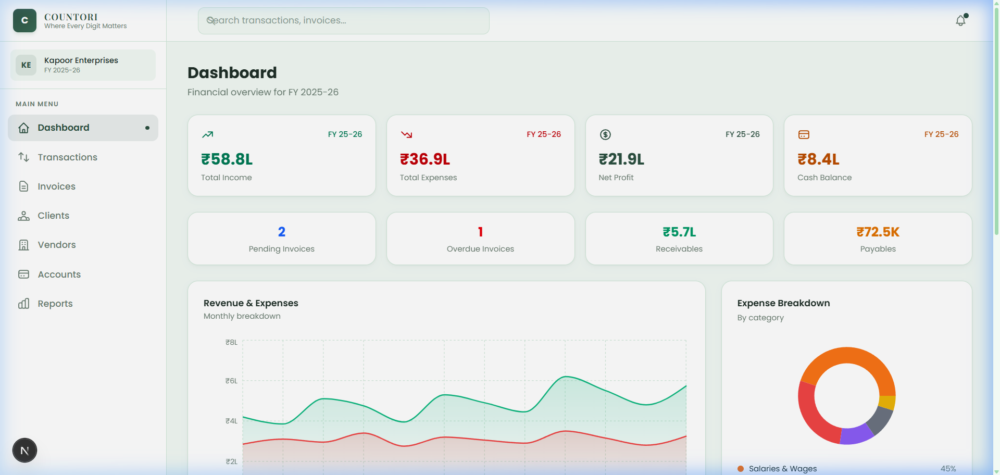

Invalid URL: /this-page-does-not-exist — Custom 404 page displayed
The application uses Next.js App Router (file-system based routing). Each folder with a page.tsx inside src/app/ becomes a route, and each returns a different response.
| Route | File | Response |
|---|---|---|
/ | src/app/page.tsx | Landing page with hero, services section |
/login | src/app/login/page.tsx | Login form (email + password) |
/signup | src/app/signup/page.tsx | Registration form (name, email, password, company) |
/dashboard | src/app/dashboard/page.tsx | Financial dashboard with charts and stats |
'use client';
import { useAuth } from '@/context/AuthContext';
import { useRouter } from 'next/navigation';
import { useEffect } from 'react';
export default function HomePage() {
const { user, loading } = useAuth();
const router = useRouter();
useEffect(() => {
if (!loading && user) {
router.replace('/dashboard');
}
}, [user, loading, router]);
return (
<div className="min-h-screen flex flex-col">
<nav>
<span>COUNTORI</span>
<a href="/login">Log In</a>
<a href="/signup">Get a Quote</a>
</nav>
<section>
<h1>Where Every Digit Matters</h1>
<p>Professional bookkeeping services tailored to your business.</p>
</section>
{/* WHY COUNTORI section, Services section, CTA, Footer */}
</div>
);
}




A custom middleware in src/middleware.ts runs on every request. It logs information before the request is processed and after the response is generated.
import { NextResponse } from 'next/server';
import type { NextRequest } from 'next/server';
export function middleware(request: NextRequest) {
const startTime = Date.now();
const { method, url } = request;
const pathname = request.nextUrl.pathname;
// [BEFORE] Request Processing
console.log(`[MIDDLEWARE — BEFORE] Incoming Request`);
console.log(` Method : ${method}`);
console.log(` Path : ${pathname}`);
console.log(` URL : ${url}`);
console.log(` Time : ${new Date().toISOString()}`);
console.log(` User-Agent: ${request.headers.get('user-agent')}`);
const response = NextResponse.next();
// [AFTER] Response Generated
const duration = Date.now() - startTime;
console.log(`[MIDDLEWARE — AFTER] Response Generated`);
console.log(` Path : ${pathname}`);
console.log(` Duration : ${duration}ms`);
console.log(` Status : ${response.status}`);
response.headers.set('X-Countori-Middleware', 'active');
response.headers.set('X-Request-Duration', `${duration}ms`);
return response;
}
export const config = {
matcher: ['/((?!_next/static|_next/image|favicon.ico).*)'],
};
A custom 404 page is implemented in src/app/not-found.tsx. When a user navigates to any invalid URL, this page is displayed with a proper error message.
import Link from 'next/link';
export default function NotFound() {
return (
<div className="min-h-screen flex flex-col items-center
justify-center bg-[#f1f9f4]">
<div className="flex items-center gap-3 mb-8">
<div className="w-10 h-10 rounded-xl bg-[#2b5040]
text-white font-bold">C</div>
<span>COUNTORI</span>
</div>
<h1 className="text-8xl font-bold">404</h1>
<h2>Page Not Found</h2>
<p>The page you are looking for does not exist
or has been moved. Please check the URL.</p>
<div className="flex gap-3">
<Link href="/">Go Home</Link>
<Link href="/dashboard">Dashboard</Link>
</div>
<p>
<strong>Available routes:</strong>
/home · /login · /signup · /dashboard
</p>
</div>
);
}